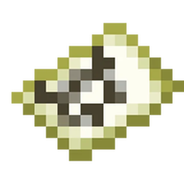
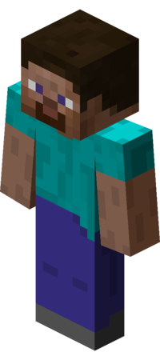
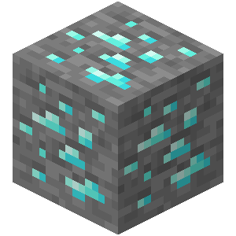

Menu
Pengaturan dan informasi website SMC DL.
Tentang SMC DL
Informasi mengenai SMC DL.

Request Addon
Request addon Minecraft yang ingin kamu lihat.

Contact
Hubungi pengelola SMC DL.

Privacy
Kebijakan privasi SMC DL.
ADVERTISEMENT